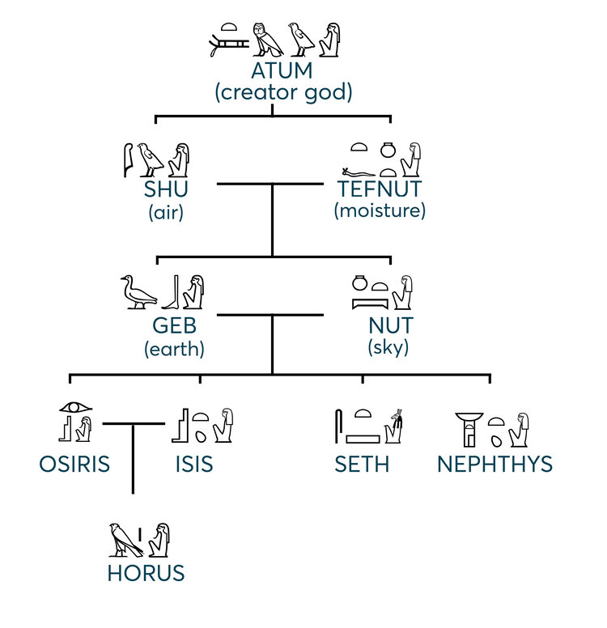

The Egyptians have slightly different creation/origin stories based on location
Hermopolis
The creation story known by those in Hermopolis goes like this:
There was a group of eight gods known as the Ogdoad, four frog headed male gods and four snake headed female gods. Water was represented by Nun and Naunet, infinity by Heh and Hauhet, darkness by Kek and Kauket, and hiddenness by Amun and Amaunet. These gods existed in watery chaos before the creation happened. It was believed that a cosmic egg came from those gods and that the egg would contain the deity responsible for creating the rest of the world. The story of the cosmic egg itself differs though, some believe it was laid by a goose named “the Great Cackler” while others believe it was an ibis, a bird associated with the god Thoth. Either way, after the egg was laid this led to the first event of earth's creation, the primeval mound. After the mound was created, a lotus blossom blooms which is a sign for the birth of a newborn sungod. Sometimes a scarab beetle comes out of the lotus. According to the texts, the scarab is often associated with the sun and known as a solar symbol. The scarab then turns into a child and when this child cries, his tears become humankind. That's how the world began, from a hermopolis point of view. Kind of interesting how a childs tears become human life.
To the right is a picture of the Ogdoad ->
Heliopolis

In Heliopolis there was a group of gods called the Heliopolitan Ennead. Here the creation of the world focuses on Atum (aka Re-Atum), a creator god. Similar to the version of the creation from Hermopolis, there's a chaotic watery state before creation actually happens. Atum creates himself and rises in the shape of an obelisk-like pillar in Heliopolis. The creation starts with Atum spitting out a pair of divine beings: Shu (god of air) and Tefnut (goddess of moisture). Shu and Tefnut then produce Geb (god of the earth) and Nut (the sky goddess). After those events happen, the cosmos, as the Egyptians know it, now exists and all the elements needed for life on earth are there. The needed elements were the sun, air, moisture, land, and sky. To the left is an image that can help see the lineage of the gods.
Memphis
There's another version of the creation that comes from Memphis. In the Memphite version of the creation, Ptah is the primary creator god. Ptah bascially created the earth and life by his thoughts and words. This kind of reminds me of the christian origin story and how it talks about how God spoke and it was. The creation myth was recorded down on a single piece of stone called the Shabaka Stone. That text on the stone describes how Ptah was responsible for the creation itself and the creation of all the gods:
"He gave birth to the gods. He made the towns, He established the nomes, He placed the gods in their shrines, He settled their offerings, He established their shrines, He made their bodies according to their wishes. Thus the gods entered into their bodies, Of every wood, every stone, every clay, Everything that grows upon him. In which they came to be. Thus were gathered to him all the gods and their kas, Content, united with the Lord of the Two Lands." (Shabaka Stone)
Fun fact, the Shabaka Stone is actually still preserved in the British Museum. (See the picture below) Kind of crazy how a whole creation origin story is all right there.
Closing
It was really interesting to learn that there is no one single creation story in Egyptian religious tradition. There were many different stories that described how the world and life was created and it's cool to see how some even shared some aspects of their creation. Each having their own distinct parts help differ each story and help us keep track of which story we are learning about. These origin stories help paint a clearer picture as to why all the gods in egypt were so important. In many of the creation stories each god played a critical role in the creation and support of life in Egypt. These were just three of the many origin stories in Egypt. There's so many more, especially since there's so many locations in Egypt and how each city had different origin stories.